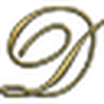
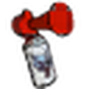
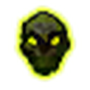
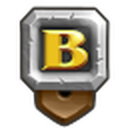
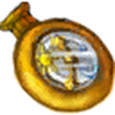
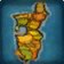

Los 111 addons que uso en el cliente 1.60.1. Qué hace cada uno, versión exacta y comando para abrirlo.






ElvUI, EllesmereUI, Details, Bagnon, Narcissus, Spoken, DBM y GearQuest no son un addon: son un paquete. Despliega cada ficha para ver sus módulos.
Todo esto lo mantengo desde WoWUp con la fuente de CurseForge. En WoWUp hay que tener marcado el juego WoW Forever, no Retail.
CurseForge ofrece la versión de Retail por defecto. Elige siempre la pestaña WoW Forever. Leatrix, RareScanner, OpenMap y Follow The Arrow son los que más caen en esa trampa.